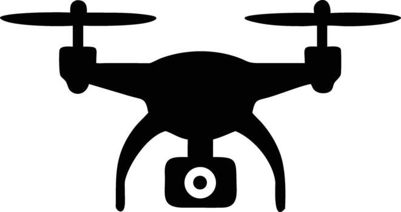

云边端协同传输展示平台
系统架构示意图
☁️
云侧模型
检查状态
蒸馏数据（离线）
💻
边缘侧模型
检查状态
更新模型
蒸馏数据（离线）
LoRA 参数（在线）

端侧模型
检查状态
更新模型
离线训练
蒸馏数据传输
💻 边缘侧 → 端侧（当前联调）
📂
边缘侧数据目录文件
目录：—
连接后端后刷新列表...
点击一行选择要传输的文件
接收方
0%
·
速率
— MB/s
已传输
—
预计剩余
—
开始传输蒸馏数据
在线更新
LoRA 参数传输
💻 边缘侧 → 端侧（固定）
⚡
上传 LoRA 参数文件
点击选择或拖拽 .bin / .safetensors 文件
端侧
0%
·
速率
— MB/s
已传输
—
预计剩余
—
开始传输 LoRA 参数
系统日志 — 云边端协同传输展示平台
状态检查
关闭
更新模型
关闭